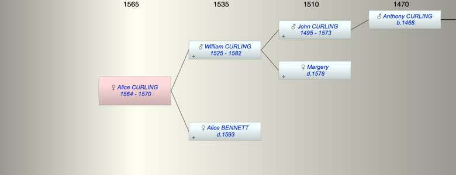

| [Index] |
| Alice CURLING (1564 - 1570) |
|  |
| b. 1564 at St Laurence |
| d. 1570 at St Laurence aged 6 |
| Parents: |
| William CURLING (1525 - 1582) |
| Alice BENNETT ( - 1593) |
| Siblings (6): |
| Roger CURLING (1557 - 1590) |
| Gregory CURLING (1559 - 1608) |
| William CURLING (1561 - 1618) |
| Susanna CURLING (1563 - 1604) |
| Anthony CURLING (1567 - 1626) |
| Nicholas CURLING (1570 - 1619) |
| Events in Alice CURLING (1564 - 1570)'s life | |||||
| Date | Age | Event | Place | Notes | Src |
| 1564 | Alice CURLING was born | St Laurence | Note 1 | ||
| 1570 | 6 | Alice CURLING died | St Laurence | Note 2 | |
| Note 1: bap St Laurence 8 Oct 1564 ex FMP PR |
| Note 2: dau. of William buried 6 Jan 1670 no age given in FMP |
| Created on a Mac™ using iFamily for Mac™ on 8 Oct 2023 |